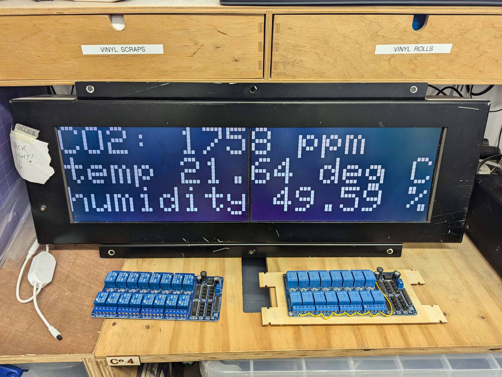

last edited: 2025-03-18 17:41:32 +0000
I like RSS feeds a lot, and I already know that I do. I have several.
This section exists to convince you to like them too.
My thoughts
They are a "you go to find the content" approach to consuming media (blogs/videos/podcasts), as opposed to the "the content comes and finds you" approach of modern algorithmic social media.
It's a little harder to find stuff, but if you save the feeds, you can go and read/watch/listen on your terms, and subscribe/unsubscribe based on your own thoughts, not those of a disembodied algorithm trying to match you to a pseudo-voodoo-doll version of yourself strung up by the wires of an attempt at an ever-knowing, advertising-loving, matrix-crunching computer.
That is to say, they put you in control.
Others' thoughts
information
https://aboutfeeds.com/ will let you know all about feeds.
opinions
Here's a comic, a blog, and a video. You have no excuse for your medium-preference.
You should read this comic about RSS titled RSS is (not) dead (yet): *How monopolies are destroying blogs, podcasts, and webcomics*.
Cory Doctorow expresses his opinion in the pretty-directly-titled You should be using an RSS reader, and Technology Connections provides us a YouTube video: Algorithms are breaking how we think.
And here are three more blogs: two by ReedyBear – "RSS could be so much better" and "I've been advocating for RSS support, and you should too"; and one by Joey: "I Ditched the Algorithm for RSS — and You Should Too".
tools
There are several tools created by others to help find/parse/create feeds like https://rss-is-dead.lol/ (grabs feeds from your Mastodon contacts), https://validator.w3.org/feed/ (validates a feed you are creating).
I've also made some tools, like: a list of common RSS URLs to help find RSS feeds on sites that have them but don't link to them; a random feed picker to pick a random feed and article from a list of feeds you're subscribed to (or use it locally).
There are almost infinite actual RSS *readers* you can use. Personally, I use Feeder (notably *not* "Feeder.co") on Android. I don't use my reader on any computers; if I want to read something on my PC I'll send the link from my phone there.
tidbits
One of my favourite sources of feeds (interest-wise) is that most things from the UK parliament have a feed, see their page on feeds.
For a source of nigh-infinite RSS feeds, have a click around some pages on my bookmarks page.
last edited: 2025-02-19 10:45:05 +0000
To me, an "article" is a "blog post" on a website that is not a personal website. I have lots of them bookmarked; see /bookmarks. Here, I provide a couple of lists of loosely related articles. Individual ones remain on /bookmarks (things should not be categorised until you have enough per category).
- "How frictionless should your life be?"
-
-
-
-
personally, I align more with the latter two. While all the modern convenience is good for some people and everyone on some days, I think it's overall bad to rely on.
- "why open data?"
-
-
-
- "how do I start a blog"
- see the many links on How to start blogging - *alifeee, 2024-01-17, infrequently updated*
- some thoughts on LLMs (Large Language Models) and AI (Artificial Intelligence)
- TheBullshitMachines.com is a very readable and understandable set of pages about the state of LLMs and generative AI. I'm sure you can guess their overall perspective, and I'm sure you can guess that mine is not far off.
- Pluralistic has many posts tagged LLM that are worth reading, notably about the chances of general intelligence coming from LLMs, LLMs being used for botspam, and copyright considerations.
last edited: 2025-02-24 12:43:01 +0000
I'm a fan of technologies. I'm not a fan of "big tech".
In that vein, here are some resources that point out privacy-respecting alternatives to Google Drive, Microsoft Office, Zoom, Facebook, Google Docs, Adobe, Discord, Meetup, Patreon, Slack, Twitter, Google Chrome etc., etc., etc.
I'm not perfect. I still use several services from "big tech".
- https://switching.software/, my favourite website, that provides a beautiful list of alternatives to common websites and apps
- https://pluja.github.io/awesome-privacy/, a huge list of privacy-respecting services
- https://cryptpad.fr/ and https://framasoft.org/, two companies who make "shareable Cloud documents" like spreadsheets, documents, polls, and presentations.
- https://etherpump.vvvvvvaria.org/p/digital-solidarity-networks.raw.html, a wonderfully formatted, "shared list of tools, practices, and readings for digital solidarity, conviviality and togetherness"
last edited: 2025-09-15 14:02:04 +0100
A bookmarklet is an item in your browsers bookmarks that is effectively a button to do something.
You can save these by dragging the link to your bookmarks bar. Then – later, on *any* website – you can activate it just by clicking the bookmark(let).
My favourite ones are:
Hopefully all these work. The raw JavaScript code that I have for them is (I had to transform it to allow it to be parsed as Markdown):
show code
javascript:(()=>{let e='data-anchor',t=document.querySelectorAll(`[${e}]`);0==t.length?document.querySelectorAll('[id], [name]').forEach(t=>{let r=document.createElement('a'),a=t.getAttribute('id')||t.getAttribute('name');r.setAttribute('href',`#${a}`),r.setAttribute(e,'true'),r.innerText=`%F0%9F%94%97%20${a}`,t.parentNode?.insertBefore(r,t)}):t.forEach(e=>e.parentNode.removeChild(e))})()
javascript:(function()%7Bconst%20selectedText%20%3D%20window.getSelection().toString().trim()%3B%0A%0Aif%20(!selectedText)%20%7B%0A%20%20alert(%22You%20need%20to%20select%20some%20text!%22)%3B%0A%20%20return%3B%0A%7D%0A%0Aconst%20url%20%3D%20new%20URL(window.location)%3B%0Aurl.hash%20%3D%20%60%3A~%3Atext%3D%24%7BencodeURIComponent(selectedText)%7D%60%3B%0A%0Aalert(url.toString())%3B%7D)()%3B
javascript:(()=>{let e=window.location.host,t='github-yawaramin-ext-link',a=document.createElement('style');a.innerText=`.${t} { background-color:#e9e9e9;%20%20border-radius:10px;%20%20margin-left:4px;%20%20padding:4px;%20%20font-family:%20sans-serif;%20%20font-size:x-small;}`,document.head.appendChild(a),document.querySelectorAll('a').forEach(a=>{if(a%20instanceof%20HTMLAnchorElement){let%20l=a.getAttribute('href');if(null!=l&&l.startsWith('http')){let%20n=new%20URL(l).host;if(e!=n){let%20i=document.createElement('span');i.className=t,i.innerText=n,a.appendChild(i)}}}})})()
javascript:(()=>{function e(){return`hsl(${Math.floor(360*Math.random())}, ${50+Math.floor(30*Math.random())}%, ${40+Math.floor(30*Math.random())}%)`}let t=e=>[...e.children].reduce((e,n)=>Math.max(e,t(n)),0)+1,n=t(document.body),r=(e,t=0,r=0)=>`hsl(${t}, 75%, ${Math.min(10+e*(1+60/n),90)+r}%)`,o=document.body;o.style.overflow="visible",o.style.transformStyle="preserve-3d",o.style.perspective=1e4;let i=window.innerWidth/2,l=window.innerHeight/2;function s(e,t){}function f(e,t,n,o){for(let i=e.childNodes,l=i.length,$=0;${let t=180*(1-e.clientY/window.innerHeight)-90,n=180*e.clientX/window.innerWidth-90;o.style.transform=`rotateX(${t}deg) rotateY(${n}deg)`})})();
I got some of the above from dozens, alex, and my own creations.
last edited: 2025-02-04 18:19:07 +0000
You can find (in theory) all the books I've (recently) read, as well as the book I am (hopefully) currently reading on my RamblingReaders account. You can follow it on Mastodon !
- Invisible Women

- ever wondered if women are intrinsically at a disadvantage? I hope so. read this book and you'll learn so much more about male-bodied crash test dummies, the benefits-for-all of clearing the snow on footpaths before roads, the tyranny of bus tickets, and way more. it's good. you should read it.
last edited: 2025-02-24 12:30:07 +0000
I'm not *that* involved in cooperatives, but I like the idea. Here are several Internet resources.
last edited: 2025-05-29 18:52:04 +0100
Dimensional analysis lets you derive (some) equations (fairly) easily without remembering them.
In particular, my favourite examples are the equations for:
- air resistance
- viscocity of water
- fuel efficiency
…which you can come up with equations with powers in, just by thinking about what quantities and variables would be relevant, and if you're missing some, then your dimensions (hopefully) will be wrong!
(this isn't very in depth - sorry — maybe in future I will write more — maybe not)
last edited: 2025-01-01 21:19:57 +0100
- The Contestant
- I watched this at the first Sheffield DocFest I volunteered at, it's about a Japanese man who spends more than a year alone in a room as part of a Truman-esque gameshow. Supposedly, it's the source of the eggplant emoji... metaphor. on wikipedia
- Fire of Love
- This is a documentary about two madly in-love vulcanologists. It's really, really, cute. Strangely, it's also a twin film as Werner Herzog released "The Fire Within: A Requiem for Katia and Maurice Krafft" at the same time. wikipedia
- The Pirate Bay: AFK
- this is a doc about The Pirate Bay. I love it because the "hacker stereotype" comes through amazingly, with the Swedes acting in such a blasé way in court. wikipedia. you can watch it for free in full on YouTube! (or watch the trailer first)
last edited: 2025-01-10 16:06:29 +0200
Sometimes, I find a really specific forum post which is so relatable but so niche at the same time. I thought a collection of them could be nice.
- STOP PUTTING MY MAIL IN JUNK! by suspense author
- I want all the emails that I get sent to go to my inbox. With Microsoft's, this is simply not possible. The advice is always "add people to your contacts/safe senders list", but the emails I want to see are those from people who's emails I don't yet know, as they are new emails. It's super annoying. Anyway, it's nice to find someone who also thinks so.
last edited: 2025-05-29 18:52:04 +0100
I love hackspaces!
They're great third spaces where you can get up to a bunch of stuff while everyone else also gets up to a bunch of stuff. While you're doing it, you can even share your ideas and skills!
I'm currently a director of Sheffield Hackspace which is in Sheffield and is a Hackspace.
Other hackspaces I've been to are:
Other hackspace's I'd like to visit are:
last edited: 2025-10-13 19:04:01 +0100
This is very much a favourite "thing", in that it is a favourite "concept".
I enjoy hardware hacking a bunch, mainly meaning programming microcontrollers. All my screwing around so far has been with C or C++ (or the "Arduino" language, which is basically just C).
I've:
- screwed around with Arduino and hardware
- https://github.com/alifeee/arduino-sketches
- https://github.com/alifeee/neonode-touch
- screwed around with web requests
- https://github.com/alifeee/discord-webhooks-from-esp8266
- screwed around with old transport signs
- https://blog.alifeee.co.uk/hull-bus-sign/
- https://github.com/ConnectedHumber/Bus-Terminal-Signs
- https://github.com/sheffieldhackspace/train-signs
- https://github.com/alifeee/openbenches-train-sign
- https://github.com/alifeee/bus-signs

- screwed around with CO2 monitors
- https://github.com/alifeee/CO2-monitoring

- both!
- https://github.com/sheffieldhackspace/co2-train-sign
- 
last edited: 2025-10-26 16:38:17 +0000

- I just think it's neat. The source is https://wiki.xxiivv.com/media/refs/borders.png

- AI is for losers! There's also the fuller and emptier versions. I saved it from Mastodon — but I don't remember where. A web search suggests the artist is reallygoodwizard based on this post.
- At the best of times, I think CCTV is creepy. At the worst of times, it seems the CCTV company wants to be even creepier by letting the creepiest creepy dog-camera they can let you know of their creeping. I love the dog. This image is an SVG traced from a picture.

- I just love this dog. I wish I could make this face.
last edited: 2025-02-04 18:19:07 +0000
I don't watch many series, because I don't like it when they leave an avaricial cliffhanger after *every* season (Stranger Things… Snowpiercer… when do they end? never).
What I *do* like is miniseries, which wrap up their story in 6-to-10 episodes of a single season. Probably just because they're like a massive film.

- This is a show about lots of men who freeze to death. It's a retelling of the mystery of "Franklin's Lost Expedition", an Arctic Exploration to find the Northwest Passage, on two boats: HMS Erebus and HMS Terror, in 1845-1848. It's 10 episodes, and it really puts you in the environment of the characters and provides a complete, satisfying story. I watched it once via a free trial to an online streaming service, and a second time via downloading it.

- I will consume any media related to 80 Days Around the World, which probably started because of the 80 Days video game (on wikipedia). And this one has David Tennant! It's 8 episodes, a bit cheesy at times, and free to watch on BBC iPlayer.

- Devs is a show about some people who get invited to a secret division of a FAANG-like mega-corporation and then shenanigans arise. It's very good. I watched it on BBC iPlayer.
last edited: 2025-05-30 23:31:03 +0100
also see my mobile game bookmarks
- Polytopia
- Polytopia, or The Battle of Polytopia is a mobile (and PC!) game that's like a super-simple version of Civilisation or any of those games that take a really long time. It's free to play alone or you have to buy a tribe (for £0.89) to play multiplayer. You can play it on Android or Apple or PC or probably a bunch of other places.
- 80 Days

- 80 Days is a narrative adventure through a neo-steam-punk Victorian world, effectively a very fun choose-your-own-adventure built around the story of Jules' Verne's novel. It's well worth £4.99 on Android or elsewhere. I will consume all 80 Days content, and this is my favourite of it.
- Slice & Dice
- Slice & Dice is an incredibly satisfying roguelite where your 5 heroes roll and reroll dice to determine their abilities. Naturally, you end up customising the dice, creating a build (trying not to make infinite reroll for the umpteenth time), and testing your luck. It's got a nice amount of luck vs skill which makes you feel like you're making decisions, and it's very slick.
last edited: 2025-05-29 18:52:04 +0100
When you buy a computer, you should be able to run any software on it that you want.
This makes sense to me.
Amazon's Kindle, then, is one of my least favourite little computers you can buy.
Thankfully, loads of people have worked on jailbreaking and installing custom software on the Kindle!
The MobileRead wiki has a great page on all the different Kindles that have been released: https://wiki.mobileread.com/wiki/Prefix_Index, where you can read all about how to install custom software.
Alternatively, you could use the (very well put-together) guide on https://kindlemodding.gitbook.io/, which attempts to make the process *really* simple and understandable. I think it does well!
Once you have jailbroken a kindle, you can install a different eBook reader like KOReader, and you can read .ePub files, .pdf files, websites, and a lot more stuff! And, importantly, the books and files you store on your device you can move to different devices, and share! Because they're files! They're information! And they're free to copy!
As for books, there are many places you can get free eBooks which are out-of-copyright, or released under a permissive licence, like:
There are also many sites like https://www.ebooks.com/ where you can buy eBooks at reasonable prices.
Sometimes people simply upload their book to their websites because they would love it if you read it!
And finally, if we were to read the Guerilla Open Access Manifesto, we could come to believe that any book which provides information should be open-access, and we could in theory download any book from places like Library Genesis or Anna's Archive, which, if they were hypothetically blocked by government, could be accessed via a VPN!
Touchless (K4) second hand kindles are about £20. You should get one.
last edited: 2025-05-29 18:52:04 +0100
OpenStreetMap is great to play around with, and even sometimes useful!
It's great for finding obscure things, like stink pipes, low-emission zones, and rare chimneys (you'll have to find examples of those yourself). You can zoom in and click "query feature", find some tags (like historical=chimney), then use Overpass Turbo (or otherwise) to find other examples that are tagged the same way.
The data on OpenStreetMap is also community sourced, which is super interesting. Mapping for the people by the people! You can contribute by directly editing the map, posting notes about incorrect data that others (or your future self) can come and amend later, or there are also websites that make contributing specific bits of data super easy (and gamified!) like https://streetcomplete.app/ and https://mapcomplete.org/.